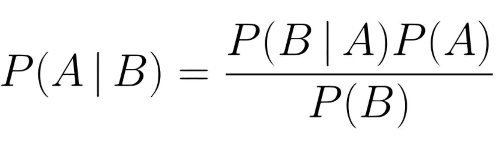

Nicolas Mazzey - Desarrollador de Software
Soy Nicolas Mazzey, estudiante de ingeniería en computación de la Universidad Católica. En este portafolio encontrarás información acerca de mis conocimientos, tecnologías, y proyectos de Machine Learning desarrollados a lo largo del curso de Introducción a los métodos de aprendizaje automático de la Universidad Católica del Uruguay.
El proceso de Machine Learning involucra varias factores para construir modelos predictivos eficaces:
Datos de uno o mas datasets: Sin datos los modelos de Machine Learning no se pueden entrenar ni usar. Para ello hacen faltan una cantidad significativa de datos y sobretodo datos que representen adecuadamente la realidad del problema.
Si un modelo se entrena con datos que no representen la realidad entonces el modelo va predecir de manera incorrecta y generar perdidas a los que confien en el modelo.
Algoritmo de Machine Learning: Es el corazon del proceso de Machine Learning, este algoritmo va a ser el que vamos a entrenar con datos para que pueda clasificar o predecir la variable objetivo en funcion de las caracteristicas del dataset.
Hay muchisimos algoritmos que pueden funcionar para una situacion dada pero una correcta eleccion marca la diferencia entre un modelo eficaz y otro deficiente.
Error de Test vs Error de Entrenamiento: Cuando se entrena un algoritmo de machine learning nunca hay que usar la misma data con la que se entreno para realizar los test ya que esto ocaciona que el algoritmo tenga siempre un 100% de efectivad y no represente correctamente la realidad donde los datos no van a ser siempre los mismos.
Para evitar este error lo que se debe hacer es tener un dataset de entrenamiento y un dataset de test, en caso de tener solo un dataset para ambos se puede fraccionar en 2 dataset con un particion 70% para entrenamiento y 30% para test.
Variable Objetivo: En los problemas de Machine Learning lo mas importante es ubicar que parametro del dataset estamos tratando de predecir o clasificar en un problema. Sin esta variable objetivo no hay punto en aplicar un algoritmo de machine Learnning ya que es el objetivos de estos algoritmos y los problemas de Machine Learning en general.
Por ejemplo si tenemos un dataset de personas cancer de pulmon la variable objetivo a predecir es si la persona tiene cancer del pulmon o no en funcion a sus caracteristicas.
La preparación de los datos es uno de los pasos más importantes en Machine Learning. Entre las tareas que realizo están:
Análisis de Distribuciones: En la preparacion de datos es importante ver que distribuciones tiene cada caracteristica debido a que hay algoritmos que asumen que las caracteristicas se comportan de cierta manera por ejemplo que sigan un distribucion gaussiana para usar naive bayes.
Detección y manejo de Outliers: Es relevante quitar los outliers porque si son muy atipicos pueden afectar el rendimiento del modelo ya que son valores muy inusuales y que no deberian de ser considerados en la realidad.
Imputación de valores faltantes: Los valores faltantes afectan negativamente al modelo ya que son tuplas que no aportan informacion para la caracteristica y aumentan el costo computacional es mejor removerlos o remplazarlos para mejorar el modelo.
Normalización de características: Es el proceso de escalar los datos a un rango estándar, necesario para algoritmos que dependen de la magnitud de las características, como KNN.
En Machine Learning, los algoritmos lineales son fundamentales para modelar relaciones entre variables. Entre los que he utilizado están:
El algoritmo de Naive Bayes es un clasificador probabilístico basado en el teorema de Bayes. Asume que todas las características son independientes entre sí dado el valor de la clase objetivo, lo que simplifica enormemente el cálculo de probabilidades.
Se utiliza en aplicaciones como la clasificación de correos electrónicos (spam/no spam), el análisis de sentimientos, y la categorización de textos.
Proyecto de Naibe Bayes para predecir condiciones para jugar al GolfEl algoritmo K-Nearest Neighbors (KNN) es un método de clasificación basado en la proximidad de los datos. Para predecir la clase de un nuevo dato, el algoritmo busca los k ejemplos más cercanos en el espacio de características y asigna la clase más frecuente entre ellos.
Utilizado en problemas de clasificación, como el reconocimiento de patrones y la clasificación de imágenes.
Proyecto de KNN para predecir deporte primario de un deportistaLa selección de características es un paso clave en Machine Learning, ya que permite reducir la dimensionalidad del conjunto de datos, mejorando la eficiencia y el rendimiento de los modelos. Los métodos principales incluyen: